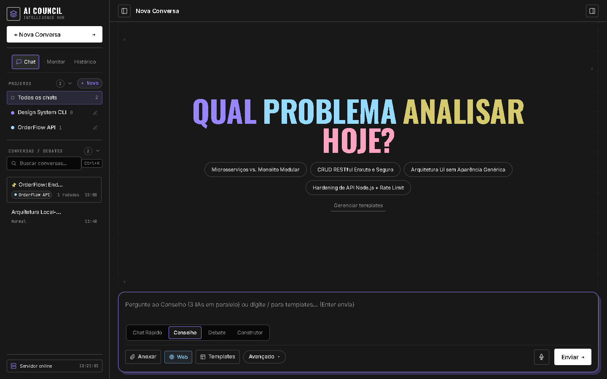
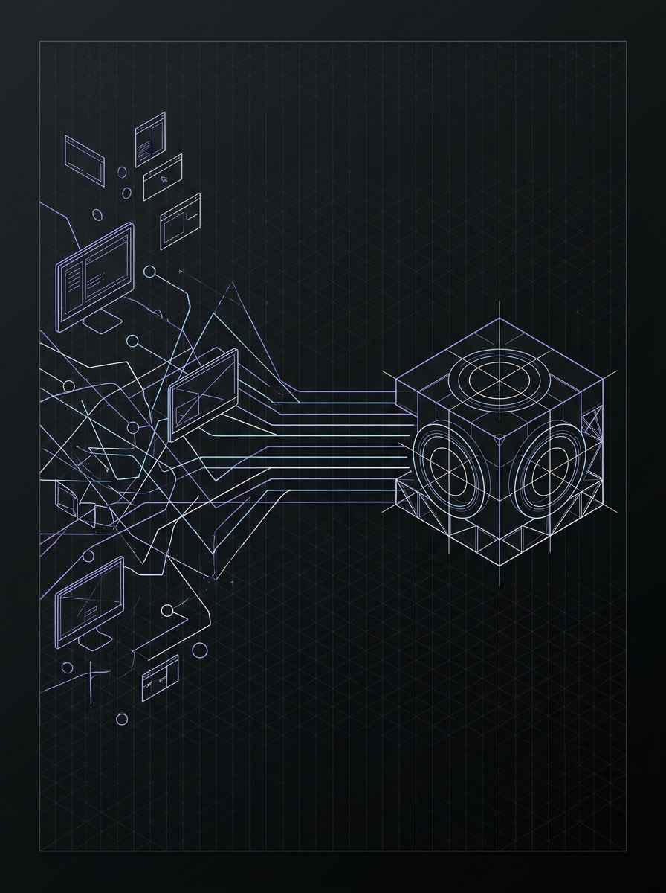
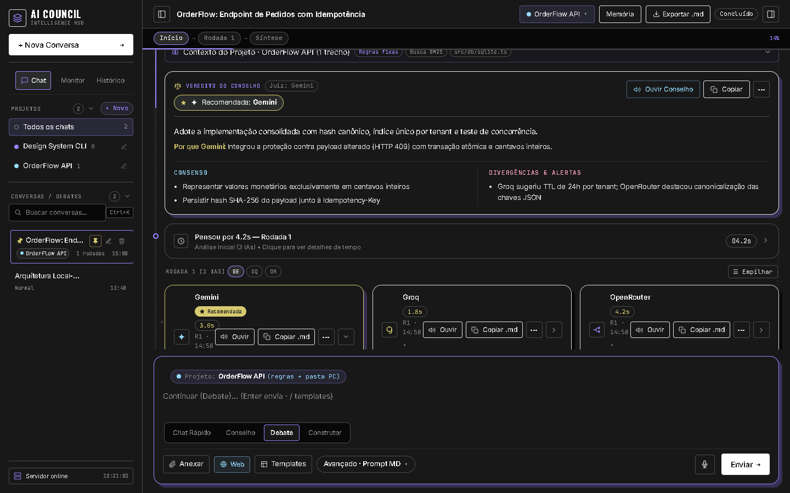
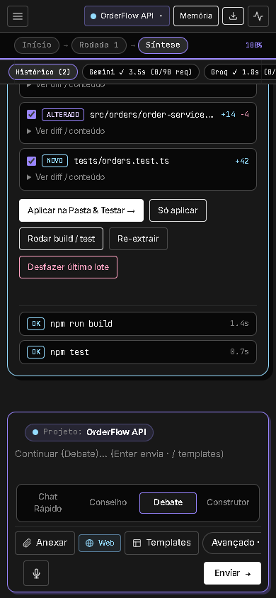
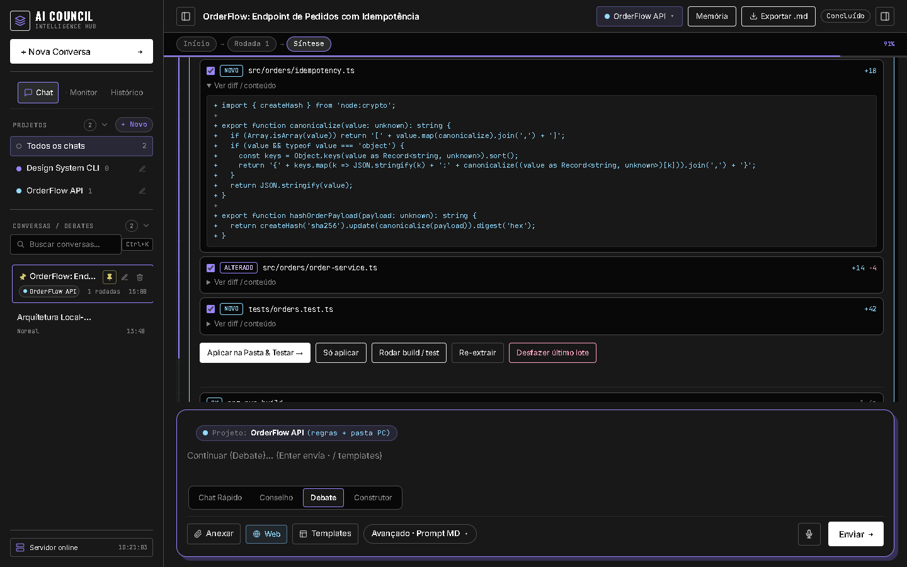
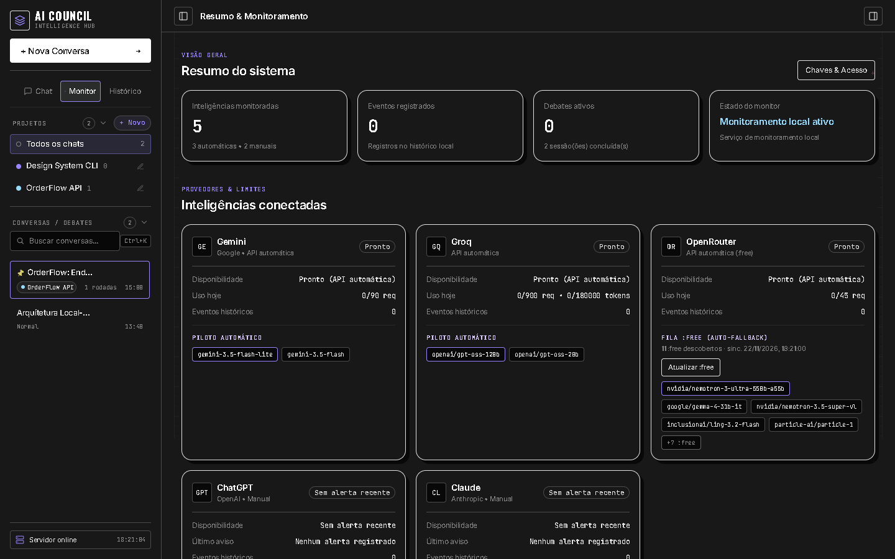
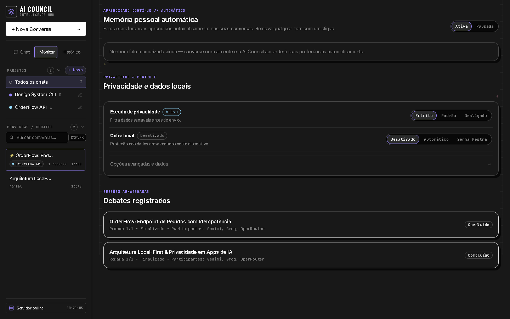
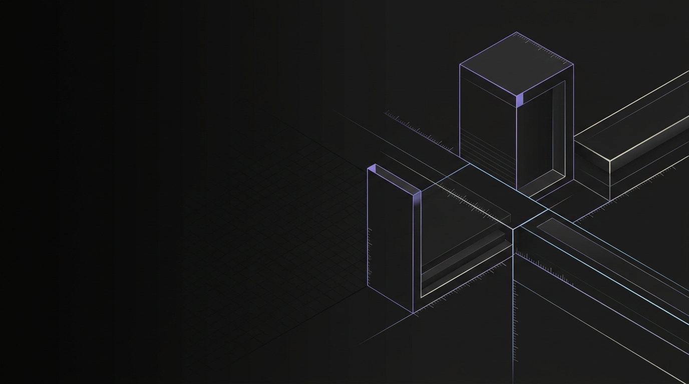

Orquestrador local-first multi-IA que une Gemini, Groq e OpenRouter em debates estruturados, escrita direta na pasta do projeto e privacidade criptografada.


Trabalhar com múltiplos modelos hoje exige alternar abas, colar arquivos manualmente, lidar com limites gratuitos imprevisíveis e confiar histórico privado a nuvens de terceiros.
Copiar trechos do chat, criar pastas na mão e descobrir erros de compilação só depois de montar tudo.
Modelos entram em 503/429 no meio do dia ou cortam arquivos extensos antes do final.
Chaves, CPFs, prints de tela e código interno acabam enviados sem filtro prévio.
Vincula uma pasta local pelo seletor nativo do Windows e fecha o ciclo completo com segurança estrita em localhost:
.ai-council-backup/ com botão Desfazernpm install, build e test com autocorreção de até 3xAlterne entre Gemini, Groq e OpenRouter com 1 clique ou ouça as três IAs lado a lado, acionando o Veredito apenas quando quiser preservar cota.
Cada IA atua com foco distinto (Arquiteto, Crítico de Borda e Relator), entregando uma síntese unificada com detecção automática de corte e botão Continuar.


Tokens fluem ao vivo sem recarregar a página, com KaTeX e Mermaid carregados localmente sob demanda.
Indexação BM25 sobre arquivos da pasta vinculada + PDFs, bloqueando .env, chaves e .git.
Paleta Ctrl+K, templates com /, voz por Groq Whisper e leitura neural individual por IA.



Detecta chaves, JWT, CPF/CNPJ e cartões antes do envio, com OCR local em imagens e tarja visual via canvas.
Criptografia em repouso via Windows DPAPI ou Senha Mestra (scrypt + chave só em RAM + Chave de Recuperação).
Escrita na pasta, setup e cofre retornam HTTP 403 fora do PC local; CSP 100% self-hosted, anti-SSRF e rate-limit.
14 módulos acíclicos validados por teste automatizado, SSE em tempo real, KaTeX, Mermaid e fontes 100% locais.
Roteadores modulares por domínio, Debate Engine, RAG BM25, Escudo DLP, Sandbox de escrita e Verificador allowlisted.
Gemini, Groq e OpenRouter :free sob UsageGate 90%, backoff persistido e armazenamento atômico em JSON/AES-256-GCM.
Boot instantâneo, CSP sem unsafe-eval e zero vulnerabilidades transitivas de pacotes front.
Portabilidade imediata sem binários C++ no Windows e criptografia transparente em repouso.
Acesso remoto depende do PC local ligado (via túnel HTTPS privado) e tiers grátis têm teto diário.
Testes automatizados em 23 suítes (sandbox, segurança, piloto automático e grafo ESM acíclico).
Controles aprovados em security:check: 0 segredos no Git, CSP local, NTFS e 0 CVEs em npm audit.
Orquestração com trava preventiva de 90% e allowlists estritas sobre APIs gratuitas.

Um projeto ponta a ponta cobrindo arquitetura de sistemas, resiliência de APIs, segurança prática (OWASP/LGPD) e UX limpa sem frameworks.
Expandir verificação segura allowlisted para projetos Python (pytest) e Go além de Node/TypeScript.
Comparativo histórico de latência por modelo e taxa de acerto das correções automáticas.